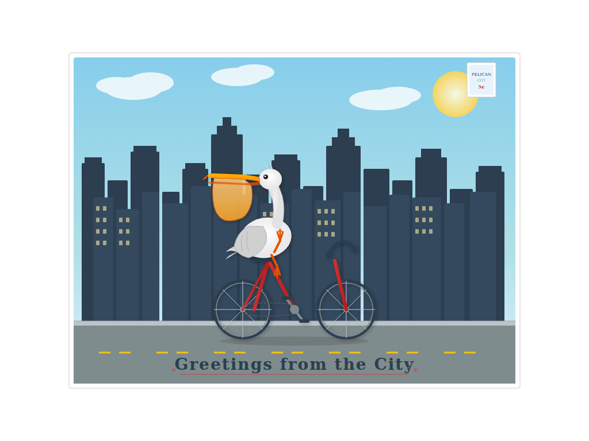

iter 0 0.85 runtime oktouched 1
intent
Draw a recognizable pelican with a large beak and pouch riding a bicycle with two wheels and handlebars, set against a city skyline background, styled as a postcard with text.
judge critique
The text at the bottom reads 'Greetings from the City' but the spec requires 'Greetings from Pelican City'. Additionally, the pelican's wings are folded against its body rather than reaching forward to hold the handlebars as requested.
runtime check
artifact.svg parses as XML
commit
iter/0: view diff
f28ca815